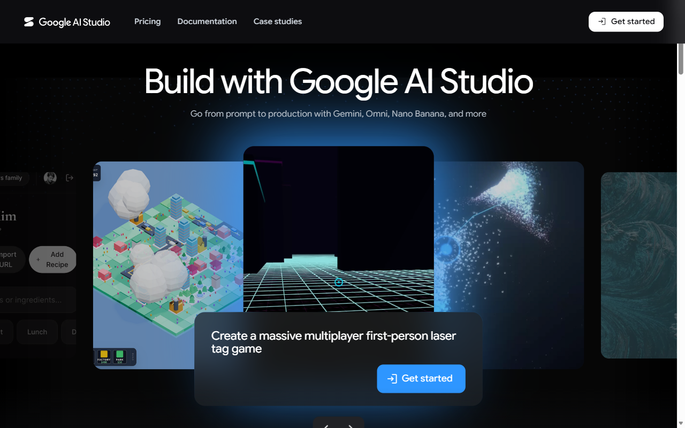
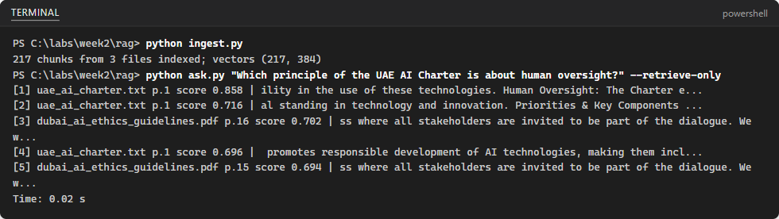
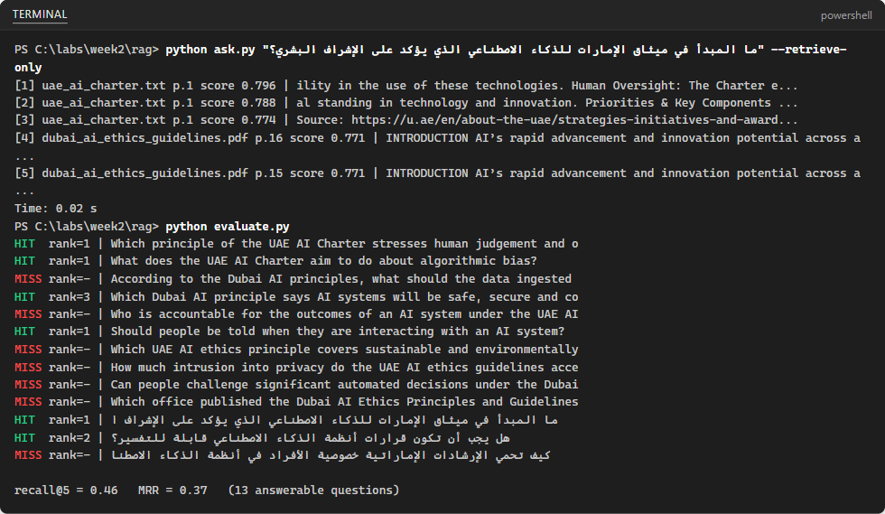
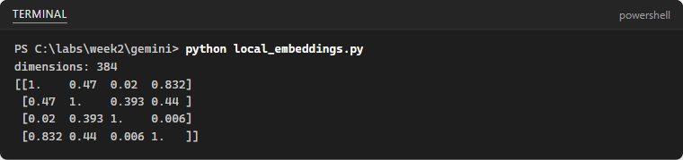

GoogleGoogle Lab 1: Call Gemini from Python with a JSON response schema
| Lab type | Hands-on lab |
|---|---|
| Course slide | Slide 90 · Week 1, Session 3 · Sat 26 Sep 2026 |
| Expected duration | 45 to 60 minutes |
| Environment | Your laptop: Python, VS Code; Google AI Studio in a web browser |
| Account and cost | Gemini API free tier (no payment method) |
| Related labs | Skillable Lab 01 and Lab 03 (same prompts in Foundry); AWS Lab 1 (same prompts in Bedrock) |
| Public docs | Structured outputs · API keys |
| Tested | 2026-10-09 · see the note at the end of the lab |
Before you start
You need one personal Google account (Gmail) for all four Google labs. You must be 18 or older. The United Arab Emirates is a supported country for Google AI Studio and the Gemini API (available regions). Turn off any VPN.
- The Gemini API free tier needs no payment method. Rate limits apply per project; you can see them in Google AI Studio.
- Content you send on the free tier may be used to improve Google products. Use only public, synthetic or non-sensitive data, never personal data.
- Keep your API key in a
.envfile that is listed in.gitignore. Never paste a key into code, chats, screenshots or commits.
Values that you type or select are shown like this: example. Replace anything in angle brackets, such as <your key>, with your own value.
Now, when you're ready, go to the next page to start the exercise.
Call Gemini from Python with a JSON response schema
In this exercise, you create a free Gemini API key in Google AI Studio, call the Gemini API from Python, run the Week 1 prompts, and ask for JSON output that follows a response schema. You add the results to the Week 1 model comparison table, next to Microsoft Foundry (Skillable Labs 01 and 03) and Amazon Bedrock (AWS Lab 1).
This exercise takes approximately 45 minutes.
Prerequisites
Before starting this exercise, ensure you have:
- A personal Google account (18 or older)
- Visual Studio Code with the Python extension
- Python 3.12, 3.13 or 3.14 and Git
- Your portfolio repository cloned on your laptop
Create a Gemini API key
Google AI Studio is Google's web tool for trying Gemini models and managing API keys.
In a web browser, open Google AI Studio at
https://aistudio.google.comand select Get started. Sign in with your personal Google account.
If you are asked to, accept the Google APIs Terms of Service and the Gemini API Additional Terms. New users get a default Google Cloud project and an API key automatically.
Open https://aistudio.google.com/apikey at
https://aistudio.google.com/apikey. If no key is listed, select Create API key and follow the dialog to create a key in a new or existing project. Copy the key.Note: Keys created in AI Studio only work with the Gemini API, but they still identify you. Treat the key like a password: if it is ever exposed, delete it on this page and create a new one.
Read how free usage works before you continue.
- The Gemini API free tier is free usage within rate limits (requests per minute, tokens per minute and requests per day). It is not a credit balance and needs no card.
- The Google Cloud Free Trial (USD 300 for 90 days, card for verification) is for Google Cloud services such as BigQuery. It cannot be used for the Gemini API in AI Studio, and you do not need it for this lab.
Set up the project
In VS Code, open your portfolio repository and create the folder
week1/gemini. Right-click the folder and select Open in Integrated Terminal.Create and activate a virtual environment, then install the packages:
powershellpython -m venv .venv .venv\Scripts\Activate.ps1 pip install -U google-genai pydantic python-dotenvOn macOS or Linux use
source .venv/bin/activateinstead of the second line.Create the files that keep your key out of Git and start the comparison table:
powershellSet-Content .gitignore ".venv/`n.env" Set-Content .env "GEMINI_API_KEY=<your key>" Set-Content model_comparison.csv "provider,model,prompt_id,correct,latency_s,valid_json,notes"Open
.envin VS Code and replace<your key>with the key you copied. The Google Gen AI SDK readsGEMINI_API_KEYautomatically.
Make your first call
Create a file named
hello.pywith the following code:pythonimport time from dotenv import load_dotenv from google import genai load_dotenv() # reads GEMINI_API_KEY from the .env file client = genai.Client() start = time.perf_counter() interaction = client.interactions.create( model="gemini-3.8-flash", input="Explain in two sentences what an AI engineer does.", ) print(interaction.output_text) print(f"Latency: {time.perf_counter() - start:.2f} s")Run it:
powershellpython hello.pyYou should see a two-sentence answer and a latency figure, for example
Latency: 1.84 s.Note: The current Gemini documentation uses the Interactions API (
client.interactions.create) shown here. Older tutorials useclient.models.generate_content; both work with the same key.
Run the Week 1 prompts
Use the same prompts as in the Foundry chat lab so that the comparison is fair.
Create
run_prompts.py. It runs a zero-shot, a few-shot, a reasoning and an Arabic prompt three times each and appends every answer tomodel_comparison.csv:python"""Run the Week 1 prompts three times each and log answers and latency.""" import csv import time from dotenv import load_dotenv from google import genai MODEL = "gemini-3.8-flash" RUNS = 3 PROMPTS = { "zero-shot": ( "Classify this hotel review as positive, neutral or negative. Reply with one word.\n" "Review: The room was clean but the Wi-Fi kept dropping all evening." ), "few-shot": ( "Classify each hotel review as positive, neutral or negative. Reply with one word.\n" "Review: Friendly staff and a great view of the Creek. Label: positive\n" "Review: The pool was closed and nobody told us. Label: negative\n" "Review: Average breakfast, convenient location. Label: neutral\n" "Review: Check-in was quick but the room smelled of smoke. Label:" ), "reasoning": ( "Read the hotel review. First list the evidence for each possible label " "(positive, neutral, negative). Then give the final answer on the last line as 'Label: <label>'.\n" "Review: Beautiful lobby, but we waited 40 minutes for our room and the AC was noisy." ), "arabic": ( "Classify this hotel review as positive, neutral or negative. Reply with one word.\n" "Review: الموقع ممتاز والغرفة واسعة، لكن الإفطار كان بارداً." ), } load_dotenv() client = genai.Client() with open("model_comparison.csv", "a", newline="", encoding="utf-8") as f: log = csv.writer(f) for prompt_id, prompt in PROMPTS.items(): for run in range(1, RUNS + 1): start = time.perf_counter() interaction = client.interactions.create(model=MODEL, input=prompt) latency = time.perf_counter() - start answer = interaction.output_text.strip().replace("\n", " ") print(f"{prompt_id:<10} run {run} {latency:5.2f}s {answer[:80]}") # columns: provider, model, prompt_id, correct, latency_s, valid_json, notes log.writerow(["gemini", MODEL, prompt_id, "", f"{latency:.2f}", "", f"run {run}: {answer[:60]}"]) time.sleep(2) # stay well inside the free-tier rate limitsRun
python run_prompts.py. It takes about a minute because it pauses between calls to stay inside the free-tier limits.For each prompt, decide whether the answer is correct and whether it changed between the three runs. Open
model_comparison.csvand type yes or no in thecorrectcolumn.
Ask for JSON with a response schema
A response schema makes the model return JSON in an exact shape. You still validate it in code, because a valid shape can still contain wrong values.
Create
review_json.py:python"""Ask Gemini for JSON that follows a schema, validate it with Pydantic and log the result.""" import csv import time from typing import Literal from dotenv import load_dotenv from google import genai from pydantic import BaseModel, Field, ValidationError MODEL = "gemini-3.8-flash" class Review(BaseModel): sentiment: Literal["positive", "neutral", "negative"] topics: list[str] = Field(description="Aspects mentioned, for example staff, cleanliness, location, price") language: Literal["ar", "en"] needs_follow_up: bool = Field(description="True if the guest reports a problem the hotel should act on") REVIEWS = [ "The room was spotless but check-in took 40 minutes and nobody apologised.", "Great location next to the metro, friendly staff and a lovely breakfast.", "الغرفة نظيفة جداً والموظفون متعاونون، والإفطار ممتاز.", "انتظرنا ساعة كاملة لتسجيل الدخول، والمكيف لا يعمل.", ] load_dotenv() client = genai.Client() valid = 0 with open("model_comparison.csv", "a", newline="", encoding="utf-8") as f: log = csv.writer(f) for number, text in enumerate(REVIEWS, start=1): start = time.perf_counter() interaction = client.interactions.create( model=MODEL, input=f"Analyze this hotel review: {text}", response_format={"type": "text", "mime_type": "application/json", "schema": Review.model_json_schema()}, ) latency = time.perf_counter() - start try: review = Review.model_validate_json(interaction.output_text) valid += 1 ok = "yes" print(f"{number}. valid {latency:.2f}s {review.model_dump()}") except ValidationError as err: ok = "no" print(f"{number}. INVALID {latency:.2f}s {err.errors()[0]['msg']}") log.writerow(["gemini", MODEL, f"json-{number}", "", f"{latency:.2f}", ok, ""]) time.sleep(2) print(f"Valid JSON on the first try: {valid}/{len(REVIEWS)}")- The Pydantic class
Reviewis the contract.Review.model_json_schema()turns it into the JSON schema sent to Gemini. response_formatasks forapplication/jsonthat follows that schema.Review.model_validate_jsonchecks the answer; a failure is printed instead of crashing.
- The Pydantic class
Run
python review_json.py. Each line showsvalidorINVALID, the latency and the parsed fields. The last line counts how many answers were valid on the first try.Check the values, not only the format: is
needs_follow_uptrue for the two complaints? Islanguagecorrect for the Arabic reviews?Add at least six more synthetic reviews to the
REVIEWSlist (three of them in Arabic, one that mixes Arabic and English) and run the script again. Record the number of valid answers.
Troubleshooting
400 API key not valid: the key in.envis wrong, has spaces or was deleted. Copy it again from the API keys page.429 RESOURCE_EXHAUSTED: you hit a free-tier rate limit. Wait a minute and run again.404 ... model not found: model names change. Check the model list and updateMODEL.User location is not supported: turn off your VPN or use another network.ModuleNotFoundError: the virtual environment is not active; run the activation line again.
Summary
In this exercise, you created a free Gemini API key, called Gemini from Python, compared answers to the Week 1 prompts across three runs, and enforced a JSON contract with a response schema and Pydantic validation.
Clean up
Nothing in this lab is billable. Keep your key for Google Labs 2 and 3. Before you commit, run git status and check that .env and .venv are not listed. Commit hello.py, run_prompts.py, review_json.py, model_comparison.csv and a short README with your observations.
End the lab
Close the terminal. You will add Bedrock rows to the same comparison table in AWS Lab 1.
How this lab was tested
On 2026-10-09 the code was run on Windows 11 with Python 3.14 and google-genai 2.26.0. Without a personal key, every request shape in this lab (plain prompt, JSON schema) was sent with a deliberately invalid key: the SDK accepted the parameters and the service answered API key not valid, which confirms the calls are well formed.
AWSAWS Lab 1: Free plan account, budget alert and Bedrock playground
| Lab type | Hands-on lab |
|---|---|
| Course slide | Slide 91 · Week 1, Session 3 · Sat 26 Sep 2026 |
| Expected duration | 45 to 60 minutes |
| Environment | AWS Management Console in a web browser |
| Account and cost | AWS Free plan: USD 100 credit at sign-up, up to USD 100 more from onboarding activities, six months |
| Related labs | Google Lab 1 (same prompts in Gemini); Skillable Lab 03 (same prompts in Foundry) |
| Public docs | AWS Free Tier · Free and paid account plans · Bedrock playgrounds |
| Tested | 2026-10-09 · see the note at the end of the lab |
Before you start
In this lab you create the AWS account that you will use in all six AWS labs. Have ready:
- An email address you control. It becomes the root user of the account.
- A mobile phone for SMS or voice verification.
- A credit or debit card. AWS uses it to verify your identity; on the Free plan you are not charged unless you upgrade.
- A password manager or another safe place for the root password.
Values that you type or select are shown like this: example. AWS console screens change from time to time; if a button has a slightly different name, look for the closest match.
Now, when you're ready, go to the next page to start the exercise.
Free plan account, budget alert and Bedrock playground
In this exercise, you create an AWS account on the Free plan, secure it with MFA, create a budget alert, and use the Amazon Bedrock playground to rerun the Week 1 prompts. Two of these steps (the budget and the Bedrock playground) also earn onboarding credits. You add the results to the Week 1 model comparison table.
This exercise takes approximately 45 minutes.
Create an AWS account on the Free plan
In a web browser, open https://aws.amazon.com/free/ at
https://aws.amazon.com/free/and select Create a free account.On the Sign up for AWS page, enter your Root user email address and an AWS account name, for example yourname-ai-course. Select Verify email address.
Enter the verification code from the email AWS sends you. Then create a strong root password and store it in your password manager.
Enter your contact information and choose Personal as the account type.
When you are asked to choose an account plan, select the Free plan. Know what it means:
- USD 100 in credits at sign-up, and up to USD 100 more for completing five onboarding activities: launch an EC2 instance, use a model in the Amazon Bedrock playground, set up a cost budget with AWS Budgets, create a web app with AWS Lambda, and create an Amazon RDS database.
- The Free plan ends after six months or when the credits are used, whichever comes first. The account then closes; AWS keeps your content for 90 days, during which you can upgrade to a paid plan.
- The Free plan blocks services that could use up credits very quickly, so you cannot run up a large bill by accident.
Enter your card details for identity verification. A small temporary authorization can appear on your statement; it is released.
Verify your phone number by SMS or voice call, then choose the Basic support plan (free) and complete the sign-up.
Sign in to the console at https://console.aws.amazon.com at
https://console.aws.amazon.comas the root user. Activation is usually quick; if a service says your account is not activated yet, wait a few minutes and try again. Do not create a second account.
Secure the account
Select your account name at the top right of the console, then Security credentials. Under Multi-factor authentication (MFA), select Assign MFA device, choose Authenticator app, scan the QR code with an authenticator app on your phone and enter two consecutive codes.
Never create access keys for the root user. Later labs use AWS CloudShell, which runs with your signed-in identity, so you do not need keys on your laptop.
Tip: For daily work, companies create a separate administrator user with IAM Identity Center and keep the root user for account tasks only. You may do the same; it is optional for this course.
Create a budget alert
In the search bar at the top of the console, type Budgets and select Budgets (Billing and Cost Management). Select Create budget.
Under Budget setup, choose Use a template (simplified), then the Zero spend budget template. It notifies you as soon as spending goes above zero.
Enter your email address as the recipient and select Create budget. Confirm the subscription email that AWS sends you.
Optional: create a second budget with the Monthly cost budget template, for example 10 USD, to warn you before you reach that amount.
A budget sends alerts; it does not stop spending. Your real protection is deleting resources at the end of every lab.
Return to the console home page and open the Explore AWS panel. It shows your credit balance and which onboarding activities you have completed. Open Billing and Cost Management and check Bills and Credits.
Choose a Region
In the Region selector at the top right, choose US East (N. Virginia) us-east-1. It offers the widest choice of Bedrock models. If a model or feature seems missing in a later lab, check the Region first.
Rerun the Week 1 prompts in the Bedrock playground
In the console search bar, type Bedrock and open Amazon Bedrock. In the left menu, select Playgrounds and then Chat (or Text).
Select Select model and choose an Amazon Nova model, for example Nova Lite.
Note: Many models are enabled by default; third-party models are subscribed through AWS Marketplace the first time you use them. Anthropic models also need a one-time First Time Use form, so pick an Amazon model for this lab.
In the configuration panel, set Temperature to 0 (more repeatable answers for classification) and keep a modest maximum length.
Paste each Week 1 prompt (the same text as Google Lab 1) and run it. After each response, read the metrics the playground shows, such as latency and input and output tokens.
zero-shot
textClassify this hotel review as positive, neutral or negative. Reply with one word. Review: The room was clean but the Wi-Fi kept dropping all evening.few-shot
textClassify each hotel review as positive, neutral or negative. Reply with one word. Review: Friendly staff and a great view of the Creek. Label: positive Review: The pool was closed and nobody told us. Label: negative Review: Average breakfast, convenient location. Label: neutral Review: Check-in was quick but the room smelled of smoke. Label:reasoning
textRead the hotel review. First list the evidence for each possible label (positive, neutral, negative). Then give the final answer on the last line as 'Label: <label>'. Review: Beautiful lobby, but we waited 40 minutes for our room and the AC was noisy.arabic
textClassify this hotel review as positive, neutral or negative. Reply with one word. Review: الموقع ممتاز والغرفة واسعة، لكن الإفطار كان بارداً.If your playground offers a compare mode, run two models side by side on the same prompt.
Ask for JSON: paste the prompt below, then copy only the JSON from the answer into a file named
bedrock_review.jsonin yourweek1/geminifolder.textAnalyze this hotel review and reply with JSON only, with exactly these fields: "sentiment" (positive, neutral or negative), "topics" (list of strings), "language" ("ar" or "en") and "needs_follow_up" (true or false). Review: The room was spotless but check-in took 40 minutes and nobody apologised.Validate it with the same schema you used for Gemini. Create
validate_json.pyinweek1/gemini, then runpython validate_json.py bedrock_review.json:python"""Validate JSON copied from the Bedrock playground against the Review schema from Google Lab 1.""" import sys from typing import Literal from pydantic import BaseModel, Field, ValidationError class Review(BaseModel): sentiment: Literal["positive", "neutral", "negative"] topics: list[str] = Field(description="Aspects mentioned, for example staff, cleanliness, location, price") language: Literal["ar", "en"] needs_follow_up: bool = Field(description="True if the guest reports a problem the hotel should act on") with open(sys.argv[1], encoding="utf-8") as f: text = f.read() try: print("valid:", Review.model_validate_json(text)) except ValidationError as err: print("INVALID:", err)A valid answer prints
valid: sentiment='negative' .... Without a response schema, models sometimes add text around the JSON or invent field values; record what you see.
Record results and check billing
Add one row per prompt to
week1/model_comparison.csv: aws-bedrock, the model ID, the prompt ID,correct, the latency in seconds,valid_json, and a note with the token counts and the Region.Open Billing and Cost Management and check Bills and Credits. A few playground prompts cost very little and are covered by your credits.
Troubleshooting
- "You don't have access to the model": choose another model, check the Region, or complete the Anthropic form if you chose an Anthropic model.
- Marketplace subscription errors on first use: wait a few minutes and retry.
- Account still pending: activation can take longer for some cards. Wait; do not open a second account.
- No budget email: confirm the subscription email from AWS Notifications.
Summary
You created and secured an AWS Free plan account, set a zero-spend budget alert, and compared Bedrock models on the Week 1 prompts, including JSON validation.
Clean up
The playground creates no resources. If you launched anything else for an onboarding activity, such as an EC2 instance, stop and terminate it now.
End the lab
Commit the updated comparison table and a screenshot of your budget with no account number or card details visible.
How this lab was tested
On 2026-10-09 the AWS Free Tier and sign-up pages were captured as shown, and validate_json.py was run with valid and invalid samples. Console pages after sign-in are described, not shown, so that no account details appear.
PythonPython Lab 1: Cited RAG pipeline over public UAE policy documents
| Lab type | Hands-on lab |
|---|---|
| Course slide | Slide 126 · Week 2, Session 2 · Wed 30 Sep 2026 (Part 2 in Week 2, Session 4) |
| Expected duration | 75 minutes, plus Part 2 in Week 2, Session 4 |
| Environment | Your laptop: Python, VS Code; the embedding model runs locally |
| Account and cost | Free: local embedding model; Gemini API free tier for the answers |
| Related labs | Skillable Lab 04 (RAG with Foundry); Google Lab 2; AWS Lab 2 |
| Public docs | Sentence Transformers · FAISS · Gemini text generation |
| Tested | 2026-10-09 · see the note at the end of the lab |
Before you start
This lab runs on your own laptop or in Google Colab. Use Python 3.12, 3.13 or 3.14 with VS Code and the Python extension. Work inside your portfolio repository so that you can commit the evidence at the end.
Values that you type are shown like this: example.
- You need the Gemini API key from Google Lab 1 for the answers. Retrieval and evaluation work without any key.
- The first run downloads the multilingual embedding model (about 470 MB). Use a good connection.
- The documents are public and published under Creative Commons Attribution 4.0 (the two PDFs) or on the official UAE Government portal (the Charter). Keep the attribution in your README.
Now, when you're ready, go to the next page to start the exercise.
Cited RAG pipeline over public UAE policy documents
In this exercise, you build a retrieval-augmented generation (RAG) pipeline over public UAE AI policy documents: load, clean, chunk, embed and index them; retrieve the best passages for a question in English or Arabic; and answer with numbered citations. Then you measure retrieval quality with an evaluation set and improve it one change at a time.
This exercise takes approximately 75 minutes.
Get the documents
In your repository create the folder
week2/ragwith a subfolderdata.Download the two PDFs into
datawith these file names:- UAE AI Ethics Principles and Guidelines (Dec 2022) →
uae_ai_ethics_guidelines.pdf - Smart Dubai AI Ethics Principles and Guidelines →
dubai_ai_ethics_guidelines.pdf
powershellInvoke-WebRequest "https://assets.u.ae/api/public/content/893c940c21c4403ea8df7faad66a889e?v=b2f9c1a1" -OutFile data\uae_ai_ethics_guidelines.pdf Invoke-WebRequest "https://www.digitaldubai.ae/docs/default-source/ai-principles-resources/ai-ethics.pdf" -OutFile data\dubai_ai_ethics_guidelines.pdf- UAE AI Ethics Principles and Guidelines (Dec 2022) →
Open The UAE Charter for the Development and Use of Artificial Intelligence on the UAE Government portal. Select the page text from the title down to the end of the Expected Outcomes list, copy it, and save it as
data/uae_ai_charter.txt(UTF-8). Add the page URL as the first line.Note: The Charter is published as a web page, not a PDF. The ingest script reads
.pdf,.txtand.mdfiles; a text file counts as one page.
Set up the project
Open a terminal in
week2/rag, create the environment and install the packages:powershellpython -m venv .venv .venv\Scripts\Activate.ps1 pip install pypdf sentence-transformers faiss-cpu numpy google-genai python-dotenvIf
faiss-cpudoes not install on your Python version, skip it: the NumPy search below is just as fast for a few thousand chunks.Create
.envand.gitignore:powershellSet-Content .env "GEMINI_API_KEY=<your key>" Set-Content .gitignore ".venv/`n.env"
Load, clean, chunk, embed and index
Create
ingest.py:python"""Load, clean, chunk, embed and index every document in the data folder.""" import json import re import unicodedata from pathlib import Path import numpy as np from pypdf import PdfReader from sentence_transformers import SentenceTransformer MODEL = "sentence-transformers/paraphrase-multilingual-MiniLM-L12-v2" CHUNK_SIZE = 800 # characters per chunk OVERLAP = 150 # characters shared by neighbouring chunks def chunk_text(text, size=CHUNK_SIZE, overlap=OVERLAP): chunks, start = [], 0 while start < len(text): chunks.append(text[start:start + size]) start += size - overlap return [c for c in chunks if c.strip()] def read_pages(path): """Yield (page number, text). A .txt or .md file counts as one page.""" if path.suffix.lower() == ".pdf": for number, page in enumerate(PdfReader(path).pages, start=1): yield number, page.extract_text() or "" else: yield 1, path.read_text(encoding="utf-8") def main(): records = [] for path in sorted(Path("data").iterdir()): if path.suffix.lower() not in {".pdf", ".txt", ".md"}: continue for page_no, raw in read_pages(path): text = unicodedata.normalize("NFKC", raw) # splits PDF ligatures (one glyph for "fi") into letters text = re.sub(r"\s+", " ", text).strip() for i, chunk in enumerate(chunk_text(text)): records.append({"id": f"{path.stem}-p{page_no}-c{i}", "source": path.name, "page": page_no, "text": chunk}) model = SentenceTransformer(MODEL) vectors = model.encode([r["text"] for r in records], normalize_embeddings=True, show_progress_bar=True) np.save("vectors.npy", vectors.astype("float32")) Path("chunks.json").write_text(json.dumps(records, ensure_ascii=False, indent=1), encoding="utf-8") files = len({r["source"] for r in records}) print(f"{len(records)} chunks from {files} files indexed; vectors {vectors.shape}") if __name__ == "__main__": main()- Cleaning:
NFKCnormalization splits PDF ligatures (one glyph for "fi") into letters, and the regular expression collapses spaces and line breaks. - Chunking: 800 characters with 150 characters of overlap, so a sentence cut at a boundary appears in both chunks.
- Metadata: every chunk keeps its source file and page, which is what makes citations possible.
normalize_embeddings=Truemakes cosine similarity equal to a simple dot product.
- Cleaning:
Run
python ingest.py. The first run downloads the model; then you should see:
217 chunks from 3 files, each a 384-dimension vector. You may also see download progress bars and a warning about an
HF_TOKEN; you can ignore both.
Retrieve and answer with citations
Create
ask.py:python"""Retrieve the best chunks for a question and answer it with citations.""" import argparse import json import time import numpy as np from sentence_transformers import SentenceTransformer EMBED_MODEL = "sentence-transformers/paraphrase-multilingual-MiniLM-L12-v2" GEMINI_MODEL = "gemini-3.8-flash" with open("chunks.json", encoding="utf-8") as f: records = json.load(f) vectors = np.load("vectors.npy") embedder = SentenceTransformer(EMBED_MODEL) def retrieve(question, k=5): q = embedder.encode([question], normalize_embeddings=True)[0] scores = vectors @ q # cosine similarity, because all vectors are normalized best = np.argsort(-scores)[:k] return [(records[i], float(scores[i])) for i in best] def build_prompt(question, hits): sources = "\n\n".join(f"[{n}] ({h['source']} p.{h['page']}) {h['text']}" for n, (h, _) in enumerate(hits, start=1)) return ("Answer the question using only the numbered sources. Cite the source numbers " "you used, like [1]. If the sources do not contain the answer, say that you do not know.\n\n" f"Sources:\n{sources}\n\nQuestion: {question}") def generate(prompt): from dotenv import load_dotenv from google import genai load_dotenv() client = genai.Client() # reads GEMINI_API_KEY from the environment interaction = client.interactions.create(model=GEMINI_MODEL, input=prompt) return interaction.output_text if __name__ == "__main__": parser = argparse.ArgumentParser() parser.add_argument("question") parser.add_argument("--k", type=int, default=5) parser.add_argument("--retrieve-only", action="store_true", help="show the retrieved chunks without calling Gemini") args = parser.parse_args() start = time.perf_counter() hits = retrieve(args.question, args.k) if not args.retrieve_only: print(generate(build_prompt(args.question, hits)), "\n") for n, (h, score) in enumerate(hits, start=1): print(f"[{n}] {h['source']} p.{h['page']} score {score:.3f} | {h['text'][:70]}...") print(f"Time: {time.perf_counter() - start:.2f} s")retrieveembeds the question with the same model and returns the five closest chunks.build_promptnumbers the chunks [1] to [5] and tells the model to cite them and to say when it does not know.--retrieve-onlyshows the retrieved chunks without calling Gemini: always check retrieval first.
Check retrieval for an English and an Arabic question:
powershellpython ask.py "Which principle of the UAE AI Charter is about human oversight?" --retrieve-only python ask.py "ما المبدأ في ميثاق الإمارات للذكاء الاصطناعي الذي يؤكد على الإشراف البشري؟" --retrieve-onlyIn both cases the top result should be the Charter chunk that contains Human Oversight. The Arabic question finds the English passage because the embedding model is multilingual.
Now generate an answer with citations:
powershellpython ask.py "Which principle of the UAE AI Charter is about human oversight?"Expected: a short answer that names the Human Oversight principle and cites [1], followed by the list of sources with file names and pages.
Optional: the same search with FAISS. Create
faiss_search.pyand run it; the scores match the NumPy search exactly.python"""Optional: the same search with FAISS instead of a NumPy dot product.""" import json import faiss import numpy as np from sentence_transformers import SentenceTransformer with open("chunks.json", encoding="utf-8") as f: records = json.load(f) vectors = np.load("vectors.npy") index = faiss.IndexFlatIP(vectors.shape[1]) # inner product = cosine for normalized vectors index.add(vectors) model = SentenceTransformer("sentence-transformers/paraphrase-multilingual-MiniLM-L12-v2") query = model.encode(["Which principle of the UAE AI Charter is about human oversight?"], normalize_embeddings=True) scores, ids = index.search(query, 5) for score, i in zip(scores[0], ids[0]): print(f"{records[i]['source']} p.{records[i]['page']} score {score:.3f}")
Measure retrieval with an evaluation set
Before you tune anything, write questions with known answers and the page that contains each answer (the gold page). Every later change is judged against this set.
Create
eval.csv. It has 13 answerable questions (three in Arabic) and two questions the documents cannot answer.gold_pagecan list several pages separated by;:csvquestion,expected_answer,gold_source,gold_page Which principle of the UAE AI Charter stresses human judgement and oversight over AI?,Human Oversight,uae_ai_charter.txt,1 What does the UAE AI Charter aim to do about algorithmic bias?,Address algorithmic bias so that AI is fair and equitable for all community members,uae_ai_charter.txt,1 "According to the Dubai AI principles, what should the data ingested by AI systems be?",Representative of the affected population,dubai_ai_ethics_guidelines.pdf,8;21 "Which Dubai AI principle says AI systems will be safe, secure and controllable by humans?",Security,dubai_ai_ethics_guidelines.pdf,10 Who is accountable for the outcomes of an AI system under the UAE AI ethics guidelines?,"Not the AI system itself; the organisations that develop and operate it",uae_ai_ethics_guidelines.pdf,11 Should people be told when they are interacting with an AI system?,Yes - people should be informed of the extent of their interaction with AI systems,uae_ai_ethics_guidelines.pdf,15 Which UAE AI ethics principle covers sustainable and environmentally friendly AI?,Principle 7 - Sustainable and Environmentally Friendly AI,uae_ai_ethics_guidelines.pdf,20 How much intrusion into privacy do the UAE AI ethics guidelines accept?,The minimum intrusion necessary,uae_ai_ethics_guidelines.pdf,21 Can people challenge significant automated decisions under the Dubai guidelines?,"Yes, and where appropriate opt out of such decisions",dubai_ai_ethics_guidelines.pdf,26;8 Which office published the Dubai AI Ethics Principles and Guidelines?,Smart Dubai Office,dubai_ai_ethics_guidelines.pdf,4;5 ما المبدأ في ميثاق الإمارات للذكاء الاصطناعي الذي يؤكد على الإشراف البشري؟,Human Oversight,uae_ai_charter.txt,1 هل يجب أن تكون قرارات أنظمة الذكاء الاصطناعي قابلة للتفسير؟,Yes - as explainable as technically possible,dubai_ai_ethics_guidelines.pdf,9;30 كيف تحمي الإرشادات الإماراتية خصوصية الأفراد في أنظمة الذكاء الاصطناعي؟,Respect privacy and use the minimum intrusion necessary,uae_ai_ethics_guidelines.pdf,21;22 What is the fine for breaking the UAE AI Charter?,Not in the documents - the system should say it does not know,, How many AI start-ups opened in Dubai in 2025?,Not in the documents - the system should say it does not know,,Create
evaluate.py. It counts a hit when a gold page is in the top five (recall@5) and rewards hits near the top (MRR):python"""Measure retrieval quality on eval.csv: recall@k and mean reciprocal rank (MRR).""" import csv import datetime from ask import retrieve K = 5 CONFIG = {"chunking": "800/150", "embedding": "paraphrase-multilingual-MiniLM-L12-v2", "search": "numpy-cosine"} with open("eval.csv", encoding="utf-8") as f: rows = list(csv.DictReader(f)) answerable = [r for r in rows if r["gold_source"]] found, reciprocal = 0, 0.0 for r in answerable: hits = retrieve(r["question"], K) gold_pages = r["gold_page"].split(";") # a passage can appear on more than one page ranks = [n for n, (h, _) in enumerate(hits, start=1) if h["source"] == r["gold_source"] and str(h["page"]) in gold_pages] if ranks: found += 1 reciprocal += 1 / ranks[0] print(f"{'HIT ' if ranks else 'MISS'} rank={ranks[0] if ranks else '-'} | {r['question'][:68]}") recall = found / len(answerable) mrr = reciprocal / len(answerable) print(f"\nrecall@{K} = {recall:.2f} MRR = {mrr:.2f} ({len(answerable)} answerable questions)") with open("results.csv", "a", newline="", encoding="utf-8") as f: csv.writer(f).writerow([datetime.datetime.now().astimezone().date().isoformat(), *CONFIG.values(), K, f"{recall:.2f}", f"{mrr:.2f}"])Run
python evaluate.py:
A first run often scores low. Ours scored recall@5 = 0.46 and MRR = 0.37. Look at the misses with
--retrieve-only: short title pages and introduction pages that appear twice in the Dubai PDF crowd out the real passages.
Improve one setting at a time
Add a cleaning step to
ingest.pyjust beforemodel = SentenceTransformer(MODEL)to drop duplicate and very short chunks, then runpython ingest.pyandpython evaluate.pyagain:pythonseen, unique = set(), [] for r in records: # drop duplicate and very short chunks key = r["text"].strip().lower() if len(key) >= 200 and key not in seen: seen.add(key) unique.append(r) records = uniqueThen try a retrieval-trained embedding model. Change
MODELiningest.pyandEMBED_MODELinask.pytointfloat/multilingual-e5-small, and add the prefixes this model expects:"passage: " + r["text"]when you embed chunks and"query: " + questionwhen you embed the question. Re-run both scripts.Note: Questions and documents must always be embedded with the same model. Re-index after every model change.
Compare your runs. Our results on 2026-10-09:
Run Change Chunks recall@5 MRR 1 Baseline (800/150, MiniLM) 217 0.46 0.37 2 Chunks of 500/100 instead 333 0.46 0.37 3 Baseline + drop duplicate and short chunks 180 0.54 0.39 4 Run 3 + multilingual-e5-small with prefixes 180 0.62 0.46 Each run appends a line to
results.csv. Change only one thing per run, and keep the table: it tells the story of your engineering decisions.
Part 2 (Week 2, Session 4): tests with GitHub Copilot
Ask GitHub Copilot to write pytest tests for
chunk_text(chunks overlap by the overlap value, no chunk is empty) and forretrieve(returns k results sorted by score, using a small in-memory set so the test needs no PDFs).Review every test before you keep it, run
pytest, fix failures, and note in the README what you changed in Copilot's suggestions.
Troubleshooting
- Empty text from a PDF page: the page is an image (scanned). Choose a text-based PDF or skip the page.
- Arabic looks reversed or broken in the terminal: that is a display issue; open
chunks.jsonin VS Code to check. 429from Gemini: wait a minute; retrieval and evaluation do not call Gemini.- A very slow first run: the model is downloading; later runs use the cache.
Summary
You built a cited RAG pipeline that works in Arabic and English, measured retrieval with recall@5 and MRR, and improved it with evidence instead of guesses.
Clean up
Nothing is billable. Commit ingest.py, ask.py, evaluate.py, eval.csv, results.csv and a README with your run table and three example answers with citations. Do not commit .env, .venv or the model cache. Committing the public documents with attribution is fine.
End the lab
Keep chunks.json: Azure Lab 2 packages it into a container.
How this lab was tested
On 2026-10-09 all scripts were run on Windows 11 with Python 3.14 (sentence-transformers 6.1, FAISS 1.15, pypdf 6.19) against the documents downloaded from the links above; the screenshots and the run table are from those runs. The Gemini answer step was checked with an invalid key only.
GoogleGoogle Lab 2: Gemini embeddings and File Search
| Lab type | Hands-on lab |
|---|---|
| Course slide | Slide 141 · Week 2, Session 3 · Mon 5 Oct 2026 |
| Expected duration | 45 minutes |
| Environment | Your laptop: the Python Lab 1 project folder and virtual environment |
| Account and cost | Gemini API free tier (File Search store up to 1 GB on the free tier) |
| Related labs | Python Lab 1 (your own pipeline); AWS Lab 2 (Bedrock Knowledge Bases) |
| Public docs | Embeddings · File Search |
| Tested | 2026-10-09 · see the note at the end of the lab |
Before you start
You need one personal Google account (Gmail) for all four Google labs. You must be 18 or older. The United Arab Emirates is a supported country for Google AI Studio and the Gemini API (available regions). Turn off any VPN.
- The Gemini API free tier needs no payment method. Rate limits apply per project; you can see them in Google AI Studio.
- Content you send on the free tier may be used to improve Google products. Use only public, synthetic or non-sensitive data, never personal data.
- Keep your API key in a
.envfile that is listed in.gitignore. Never paste a key into code, chats, screenshots or commits.
Values that you type or select are shown like this: example. Replace anything in angle brackets, such as <your key>, with your own value.
You also need the data folder and eval.csv from Python Lab 1: the public UAE AI Charter text and the two AI ethics guideline PDFs.
Now, when you're ready, go to the next page to start the exercise.
Gemini embeddings and File Search
In this exercise, you compare sentence meanings with a local embedding model and with Gemini embeddings, then use the Gemini API File Search tool, which chunks, embeds, stores and retrieves your documents for you. You ask the same evaluation questions as in Python Lab 1 and compare answers, citations and effort.
This exercise takes approximately 45 minutes.
Set up
Create the folder
week2/geminiin your repository and copy thedatafolder andeval.csvfromweek2/raginto it. Open a terminal inweek2/gemini.powershellCopy-Item ..\rag\data .\data -Recurse Copy-Item ..\rag\eval.csv .Activate the Python Lab 1 virtual environment (it already has the local embedding model) and add the Gemini SDK. Create the
.envfile with your key:powershell..\rag\.venv\Scripts\Activate.ps1 pip install -U google-genai python-dotenv Set-Content .env "GEMINI_API_KEY=<your key>" Set-Content .gitignore ".env"
Compare meanings with embeddings
An embedding is a list of numbers. Texts with similar meaning get vectors that point in similar directions, so their cosine similarity is close to 1.
Create
local_embeddings.pyto test the local model you used in Python Lab 1:python"""The same similarity test with the local model from Python Lab 1 (no key needed).""" import numpy as np from sentence_transformers import SentenceTransformer TEXTS = [ "How do I renew my residence visa?", "Steps to extend an Emirates residency permit", "Best beaches in Dubai", "كيف أجدد تأشيرة الإقامة؟", # Arabic: "How do I renew my residence visa?" ] model = SentenceTransformer("sentence-transformers/paraphrase-multilingual-MiniLM-L12-v2") vectors = model.encode(TEXTS, normalize_embeddings=True) print("dimensions:", vectors.shape[1]) print(np.round(vectors @ vectors.T, 3))Run
python local_embeddings.py. The 4 × 4 table shows the similarity of every pair of texts:
- The English question and its Arabic translation score about 0.83: the multilingual model matches meaning across languages.
- The visa question and the residency-permit sentence score 0.47 although they share almost no words.
- The beach sentence is unrelated to the visa question (about 0.02).
Create
gemini_embeddings.pyto run the same test withgemini-embedding-2:python"""Compare sentence meanings with Gemini embeddings (gemini-embedding-2).""" import numpy as np from dotenv import load_dotenv from google import genai from google.genai import types TEXTS = [ "How do I renew my residence visa?", "Steps to extend an Emirates residency permit", "Best beaches in Dubai", "كيف أجدد تأشيرة الإقامة؟", # Arabic: "How do I renew my residence visa?" ] load_dotenv() client = genai.Client() # One Content object per text gives one embedding per text. A plain list of strings # would be aggregated into a single embedding by gemini-embedding-2. contents = [types.Content(parts=[types.Part.from_text(text=f"task: sentence similarity | query: {t}")]) for t in TEXTS] result = client.models.embed_content( model="gemini-embedding-2", contents=contents, config=types.EmbedContentConfig(output_dimensionality=768), ) vectors = np.array([e.values for e in result.embeddings]) vectors = vectors / np.linalg.norm(vectors, axis=1, keepdims=True) print("dimensions:", vectors.shape[1]) print(np.round(vectors @ vectors.T, 3))With
gemini-embedding-2, a plain list of strings is merged into one aggregated embedding. Wrap each text in its owntypes.Contentobject, as above, to get one embedding per text. Thetask: sentence similarity | query:prefix tells the model what the embedding is for;gemini-embedding-2uses prefixes instead of a task type.Run
python gemini_embeddings.pyand compare the two tables. Note the vector size (768 here, because ofoutput_dimensionality) and whether the Arabic sentence is still closest to its English translation.
Index the documents with File Search
Create
file_search.py:python"""Index the policy documents in a Gemini File Search store and ask the evaluation questions.""" import argparse import csv import time from pathlib import Path from dotenv import load_dotenv from google import genai MODEL = "gemini-3.8-flash" STORE_FILE = Path("store.txt") # remembers the store name between runs load_dotenv() client = genai.Client() def get_or_create_store(): if STORE_FILE.exists(): return STORE_FILE.read_text(encoding="utf-8").strip() store = client.file_search_stores.create( config={"display_name": "uae-ai-policies", "embedding_model": "models/gemini-embedding-2"}) for path in sorted(Path("data").iterdir()): if path.suffix.lower() not in {".pdf", ".txt", ".md"}: continue operation = client.file_search_stores.upload_to_file_search_store( file=str(path), file_search_store_name=store.name, config={"display_name": path.name}) while not operation.done: # the service chunks, embeds and indexes the file time.sleep(5) operation = client.operations.get(operation) print("indexed", path.name) STORE_FILE.write_text(store.name, encoding="utf-8") return store.name def ask(store_name, question): start = time.perf_counter() interaction = client.interactions.create( model=MODEL, input=f"{question} Answer in two sentences and cite the document.", tools=[{"type": "file_search", "file_search_store_names": [store_name]}], ) latency = time.perf_counter() - start citations = [] for step in interaction.steps: if step.type == "model_output": for block in step.content: if block.type == "text" and block.annotations: for ann in block.annotations: if ann.type == "file_citation": page = getattr(ann, "page_number", None) citations.append(f"{ann.file_name}" + (f" p.{page}" if page else "")) return interaction.output_text, sorted(set(citations)), latency if __name__ == "__main__": parser = argparse.ArgumentParser() parser.add_argument("--delete", action="store_true", help="delete the store and stop") args = parser.parse_args() if args.delete: name = STORE_FILE.read_text(encoding="utf-8").strip() client.file_search_stores.delete(name=name, config={"force": True}) STORE_FILE.unlink() print("deleted", name) raise SystemExit store_name = get_or_create_store() with open("eval.csv", encoding="utf-8") as f: questions = [row["question"] for row in csv.DictReader(f)] with open("file_search_results.csv", "w", newline="", encoding="utf-8") as f: out = csv.writer(f) out.writerow(["question", "answer", "citations", "latency_s", "answer_correct", "citation_correct"]) for q in questions: answer, citations, latency = ask(store_name, q) print(f"\nQ: {q}\nA: {answer}\nSources: {citations} ({latency:.1f} s)") out.writerow([q, answer, "; ".join(citations), f"{latency:.2f}", "", ""]) time.sleep(2)file_search_stores.createmakes a store, a container for the embeddings of your documents.upload_to_file_search_storeuploads a file; the service chunks it, embeds the chunks and indexes them. The loop polls the operation until it is done.- The store name is saved in
store.txt, so the next run reuses the store instead of indexing again. - The
file_searchtool lets the model retrieve chunks; citations come back asfile_citationannotations with the file name and, for PDFs, the page number.
Run
python file_search.py. The first run printsindexed ...for each of the three files, then the answer, sources and latency for every question ineval.csv. Results are saved tofile_search_results.csv.Note: Raw files uploaded this way are deleted after 48 hours, but the data imported into a File Search store stays until you delete the store. Storage and query-time embeddings are free; on a paid tier you pay for embeddings at indexing time.
Open
file_search_results.csvand fillanswer_correctandcitation_correct(yes, partly or no) for each question. Use theexpected_answerandgold_sourcecolumns ofeval.csvas the reference.
Compare with your own pipeline
Add a row for File Search to your Week 2 results table and compare it with your Python Lab 1 pipeline:
Criterion Python Lab 1 pipeline Gemini File Search Correct answers (of 13 answerable) Correct citations Unanswerable questions declined (of 2) Median latency Lines of retrieval code you wrote about 60 about 20 What you control chunking, model, top k, filters chunk size, metadata filters Where the data is stored your laptop the provider's store Write three sentences in your README: which approach you would choose for a public-sector FAQ bot, and why.
Troubleshooting
- Upload seems stuck: large PDFs take longer; the loop keeps polling. If it fails, check the file type.
429errors: wait, then run again; the script pauses two seconds between questions.- No sources printed: print the whole
interaction.stepsobject to see the response, and check the File Search page for changes.
Summary
You compared local and Gemini embeddings, built a managed File Search index over the same documents, and measured its answers and citations against your own RAG pipeline.
Clean up
Delete the File Search store when you have recorded your results:
powershellpython file_search.py --deleteThe
forceoption in the script deletes the store together with its documents.
End the lab
Commit local_embeddings.py, gemini_embeddings.py, file_search.py and file_search_results.csv. Do not commit .env or store.txt.
How this lab was tested
On 2026-10-09 the local embedding script was run as shown. The Gemini embedding, File Search store and File Search query calls were checked with google-genai 2.26.0 using an invalid key: the SDK accepted every parameter and the service rejected only the key.